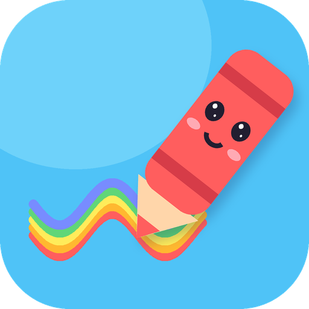
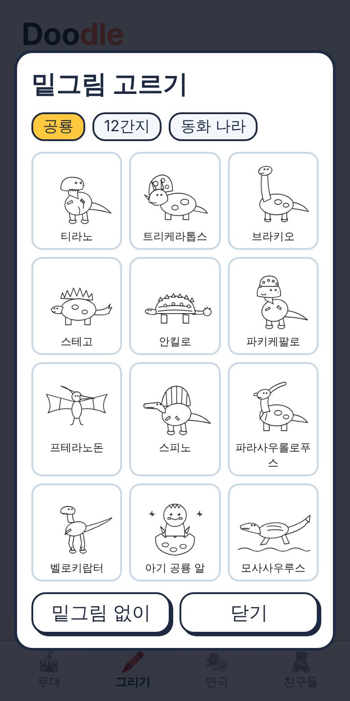
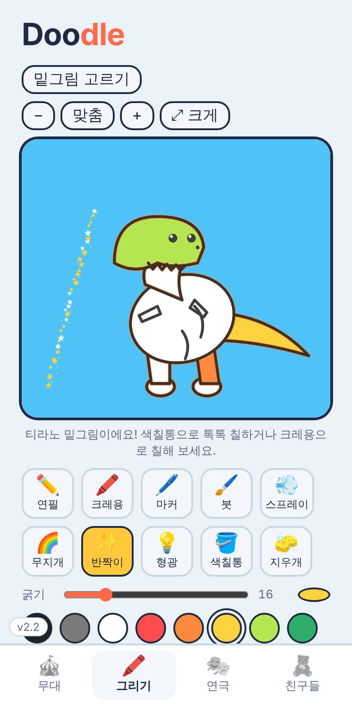
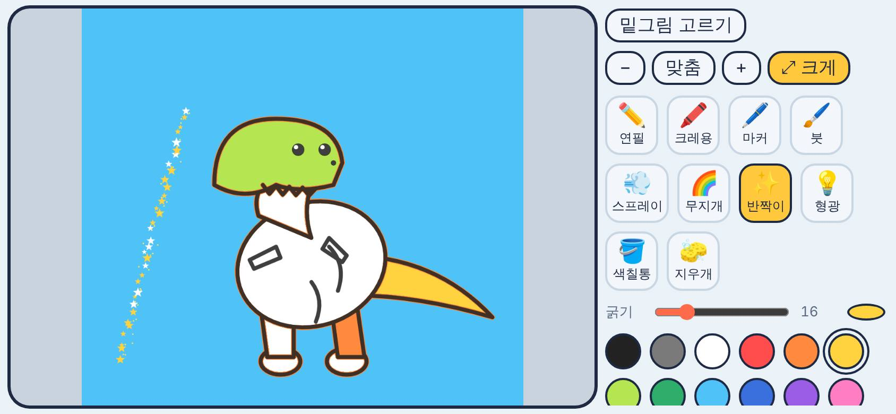
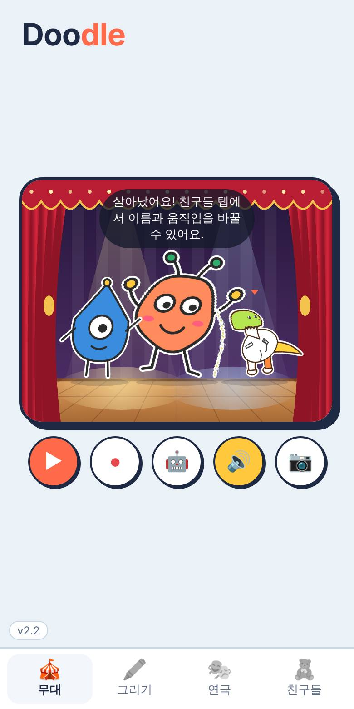
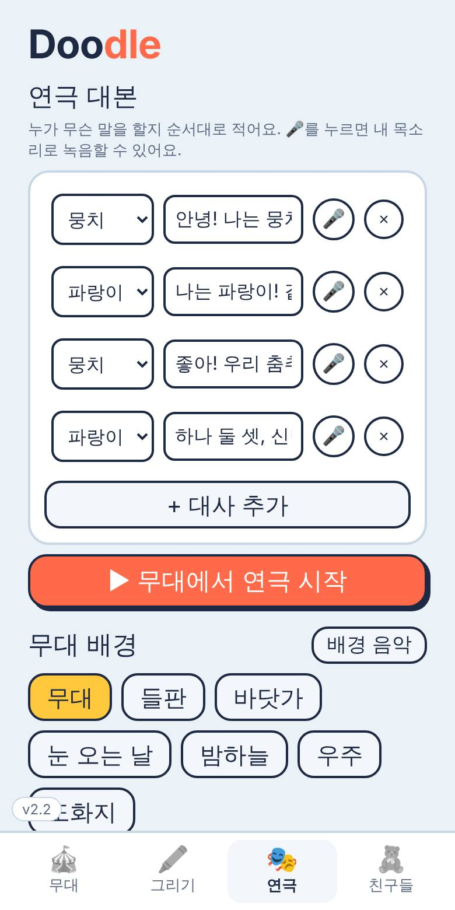
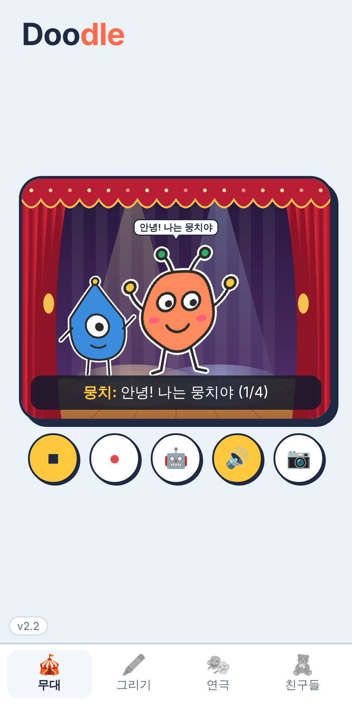
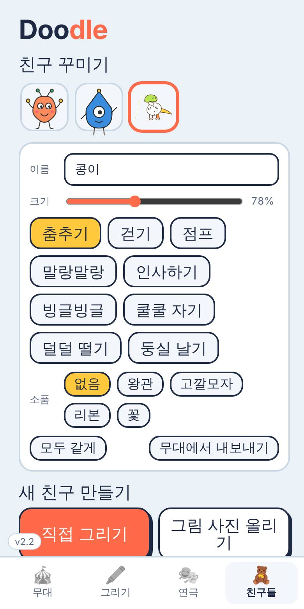

🖍️그리기
밑그림을 색칠하거나 빈 종이에 마음대로 그린 다음, 살아나라!를 누르면 무대에 나와요.


밑그림 색칠하기
- 위쪽 밑그림 고르기를 눌러요.
- 공룡 · 12간지 · 동화 나라 중에서 하나를 골라요.
- 색을 고르고 칸 안을 톡 누르면 색칠통으로 칠해져요.
- 다 칠했으면 살아나라!
밑그림 28가지
🦖 공룡 12종🐭 12간지 동물🏰 공주 · 로봇 · 유니콘 · 성
공룡: 티라노, 트리케라톱스, 브라키오, 스테고, 안킬로, 파키케팔로, 프테라노돈, 스피노, 파라사우롤로푸스, 벨로키랍터, 아기 공룡 알, 모사사우루스
펜 10가지
✏️연필 — 가는 선
🖍️크레용 — 거친 질감
🖊️마커 — 반투명
🖌️붓 — 빠르면 가늘게
💨스프레이
🌈무지개
✨반짝이 별
💡형광 빛
🪣색칠통
🧽지우개
굵기 막대로 펜 크기를 바꾸고, 🌈 동그라미를 누르면 원하는 색을 고를 수 있어요. 틀리면 ↶ 되돌리기.
크게 그리기
- 두 손가락으로 벌리면 확대, 모으면 축소돼요. 두 손가락으로 끌면 옮겨져요.
- ⤢ 크게를 누르면 화면이 가로로 돌아가요. 종이는 왼쪽, 도구는 오른쪽.
- 작게 보기로 돌아와요.

🎪무대
살아난 친구들이 노는 곳이에요. 무대만 크게 보이고, 아래 동그란 버튼 5개로 놀아요.

손가락으로 놀기
- 친구를 톡 누르면 공중제비 점프!
- 빈 곳을 누르면 그 자리로 걸어가요.
- 무대에는 친구가 5명까지 나와요.
버튼 5개
▶연극 시작
●영상 녹화 (30초)
🤖자동으로 놀기
🔊소리 켜고 끄기
📷사진 찍기
녹화나 사진은 끝나면 바로 갤러리 저장·카톡 보내기 화면이 떠요.
🎭연극
대본을 쓰면 무대에서 친구들이 차례로 말해요. 무대 배경과 음악도 여기서 바꿔요.


대본 쓰고 연극하기
- 왼쪽에서 말할 친구를 고르고, 오른쪽에 대사를 적어요.
- + 대사 추가로 줄을 늘려요.
- ▶ 무대에서 연극 시작을 누르면 무대로 가서 목소리로 읽어줘요.
🎤 내 목소리로 말하기
대사 옆 🎤를 누르고 말한 뒤 ■를 누르면 녹음돼요. 연극할 때 그 친구가 내 목소리로 말해요. (처음 한 번 마이크 허용)
무대 배경
무대들판바닷가눈 오는 날밤하늘우주도화지
배경 음악 버튼으로 신나는 음악을 켤 수 있어요.
🧸친구들
무대에 있는 친구를 꾸미고, 새 친구를 만들고, 만든 친구를 다시 불러와요.

친구 꾸미기
- 위쪽 친구 그림을 눌러 꾸밀 친구를 골라요.
- 이름, 크기, 움직임(춤추기·걷기·점프 등 9가지)을 바꿔요.
- 소품으로 왕관·고깔모자·리본·꽃을 씌워요.
- 모두 같게를 켜면 다 같이 같은 춤을 춰요.
종이 그림으로 친구 만들기
그림 사진 올리기로 종이에 그린 그림을 찍으면 배경을 오려서 친구로 만들어요. 흰 종이에 진하게, 밝은 곳에서 찍으면 잘 돼요.
친구 상자
만든 친구는 자동으로 보관돼요. 누르면 무대로 다시 나오고, ×로 지울 수 있어요.
🔄업데이트
- 앱을 켤 때 새 버전이 있으면 "새 버전이 나왔어요!" 창이 떠요.
- 업데이트를 누르면 새 파일을 받아요.
- 받은 파일을 열어 설치하면 끝. 만든 친구들은 그대로 남아요.
화면 왼쪽 아래 작은 숫자(예: v2.2)가 지금 버전이에요.